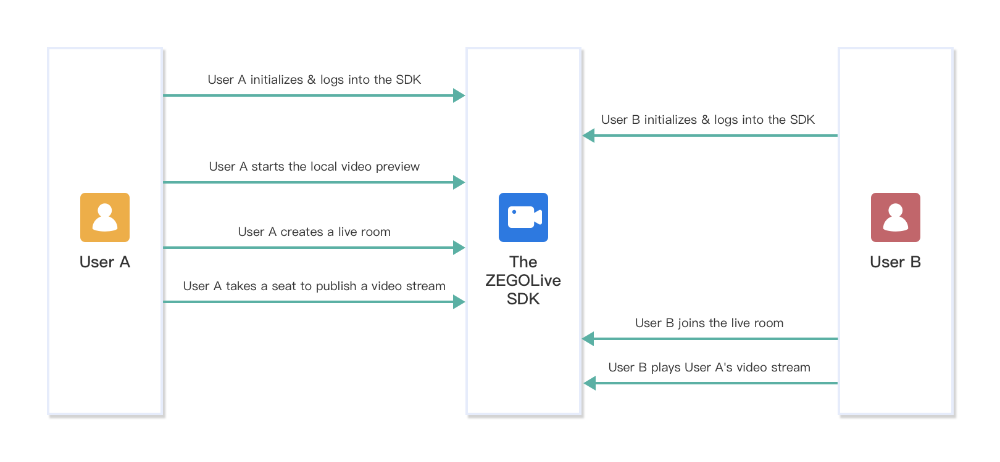
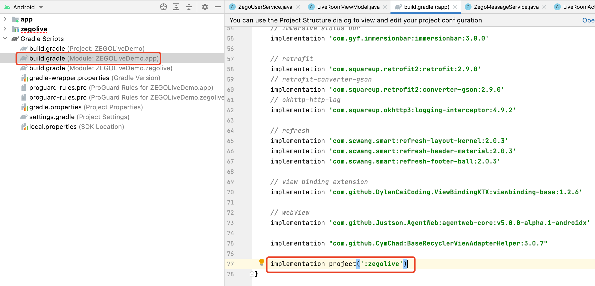
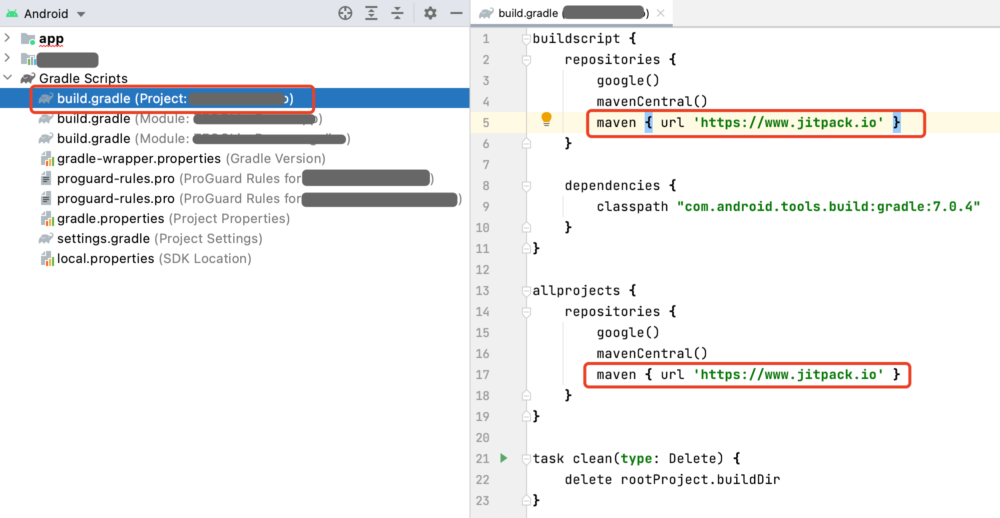
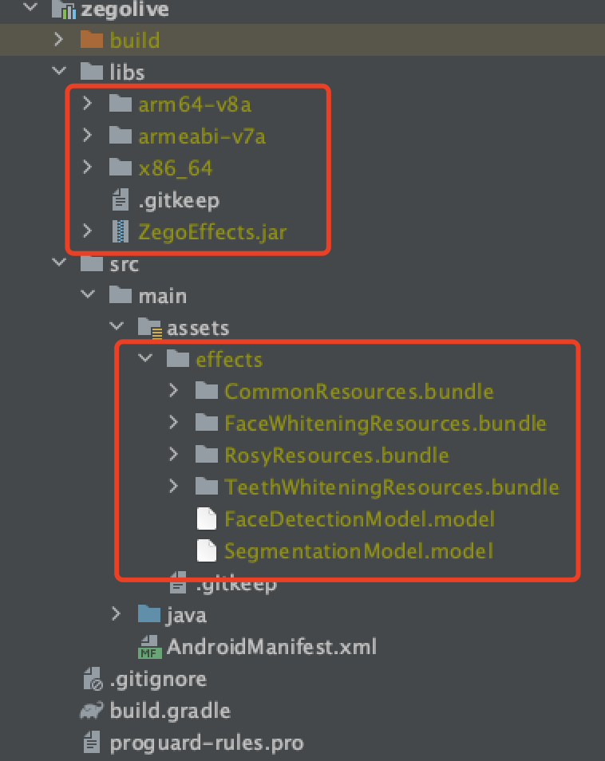

ZEGO Live provides you the capability to build an interactive live streaming application by encapsulating the Express-Video SDK, ZIM SDK, and ZegoEffects SDK. This document describes how to build a live video streaming with the ZEGO Live SDK.
The following diagram shows the basic process of creating a live room and a participant (user B) playing a stream published by the host (user A).

The Server APIs that we used to implement live room related business logic in the ZEGO Live sample app are only for experience and debugging purposes.
To build your own live streaming app, you can refer to ours to design your own business server APIs and replace them in our sample code. For more details about those Server APIs, see Room related Server APIs.
To integrate the SDK, do the following:
zegolive module to your project.Add the following code to the settings.gradle file:
1 | include ':zegolive' |
Modify the build.gradle file of your application, add the following code to the dependencies node:
1 | implementation project(':zegolive') |

Modify the build.gradle file of your project, add the following code to the repositories node:
1 | maven { url 'https://www.jitpack.io' } |

Put the ZegoEffects SDK you get in the previous step into the zegolive/libs file, and put the resources, and models into the zegolive/src/main/assets/effects file.

sync now.Permissions can be set as needed.
Open the file app/src/main/AndroidManifest.xml, and add the following code:
1 | <!-- Permissions required by the SDK --> |
Note: For Android 6.0 or later, some important permissions must be requested at runtime rather than declared statically in the file
AndroidMainfest.xml, therefore, you need to add the following code to do so (requestPermissions is a method of an Android Activity).
1 | String[] permissionNeeded = { |
To initialize the ZEGOLive SDK, get the RoomManager instance, pass the AppID and AppSign of your project.
1 | // The AppID you get from ZEGOCLOUD Admin Console. |
To receive event callbacks, call the setListener to listen for and handle various events as needed.
1 | ZegoMessageService messageService = ZegoRoomManager.getInstance().messageService; |
To access the ZEGOLive service, you must log in first.
1 | ZegoUserInfo user = new ZegoUserInfo(); |
Before creating a live room to start live streaming, you can call the playVideoStream method to start the local video preview.
1 | // The [userID] can be used to specify which user's view you want to view. |
To create a live room, call the createRoom method:
1 | String roomID = "YOUR_ROOM_ID"; |
After a live room is created, to start live streaming, the host will need to call the takeSeat method to speak. And the SDK automatically publishes the streams when the host takes a seat successfully.
1 | ZegoRoomManager.getInstance().userService.takeSeat(new ZegoRoomCallback(){ |
To join a live room, call the joinRoom method.
1 | String roomID = "ROOM_ID"; |
After joining a live room, for a participant to watch the live streaming, he will need to call the playVideoStream method to play the host’s published streams.
1 | // The [userID] can be used to specify which user's view you want to view. |
To send text chat messages in the room, call the sendTextMessage method.
1 | ZegoRoomManager.getInstance().messageService.sendTextMessage("YOUR_MESSAGE", new ZegoRoomCallback() { |
To receive the text chat messages, listen for the callback onReceiveTextMessage.
1 | ZegoRoomManager.getInstance().messageService.setListener(new ZegoMessageServiceListener() { |
Before the host leaves the live room, he will need to call the leaveSeat to leave the seat first. And the SDK automatically stops publishing streams when the host leaves the seat successfully.
1 | ZegoRoomManager.getInstance().userService.leaveSeat(new ZegoRoomCallback(){ |
To leave the live room, call the leaveRoom method. And the SDK stops all the stream publishing and playing operations simultaneously.
1 | ZegoRoomManager.getInstance().roomService.leaveRoom(new ZegoRoomCallback() { |
To finish the ZEGOLive service, call the logout method.
1 | ZegoRoomManager.getInstance().userService.logout(); |
To deinitialize the SDK to make it uninitialized, call the uninit method.
1 | ZegoRoomManager.getInstance().unInit(); |
Question: The error Lambda expressions are not supported at language level '7' occurs after importing the zegolive module.
Answer: Lambda expressions are only supported in Java 8 or later. You will need to add the following code into the build.gradle file of your project first:
1 | android { |